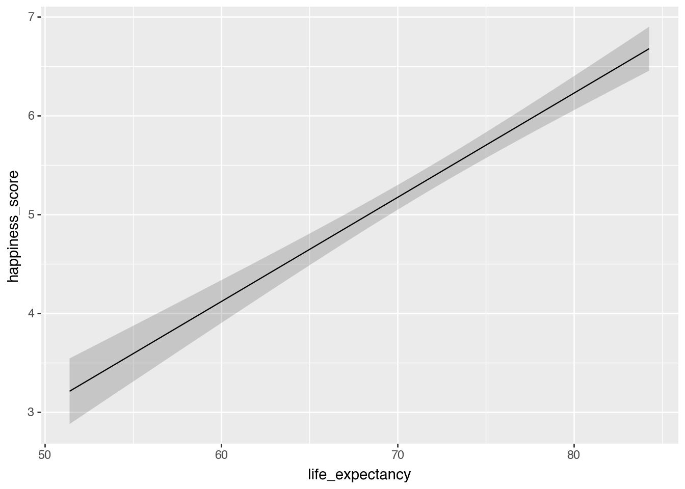
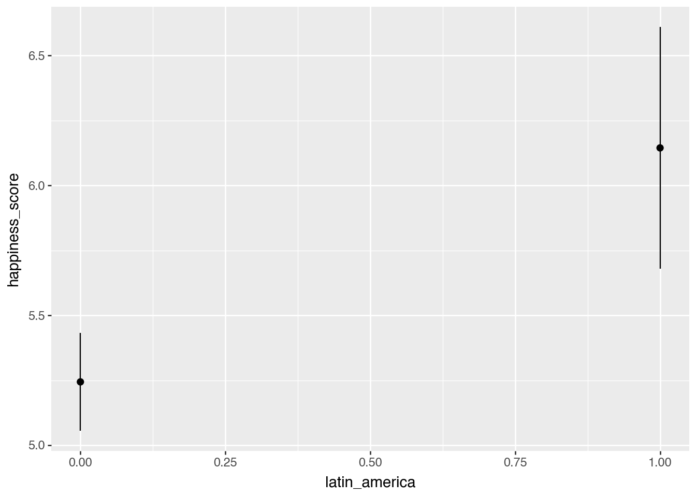
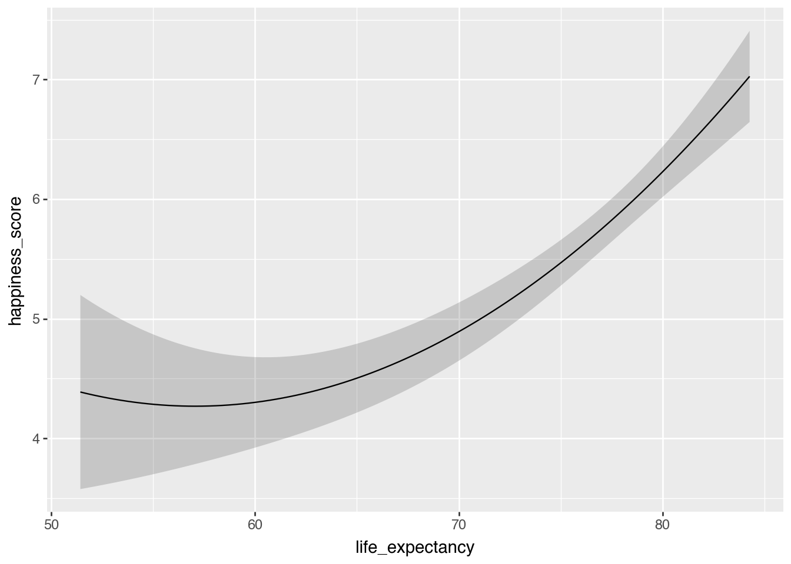
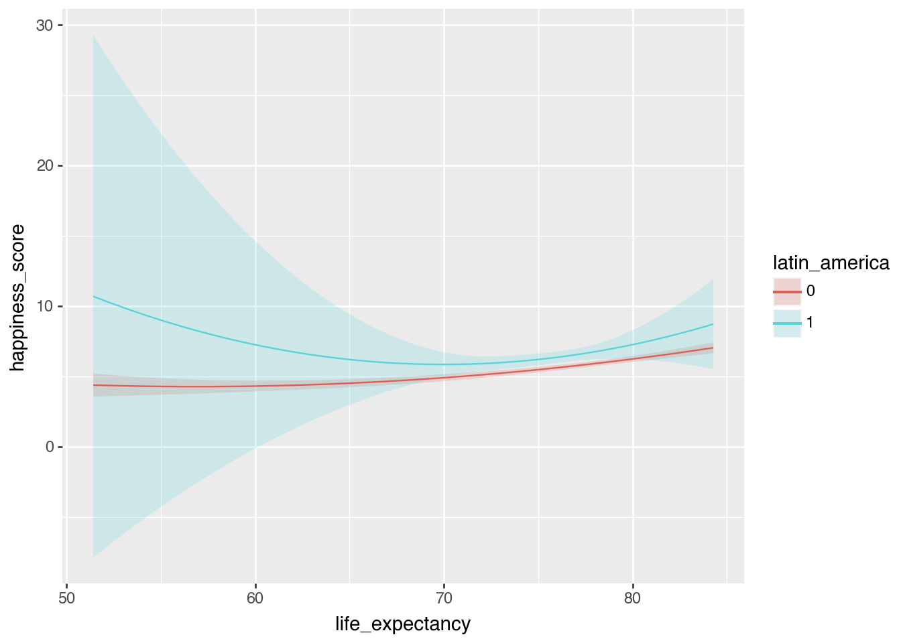
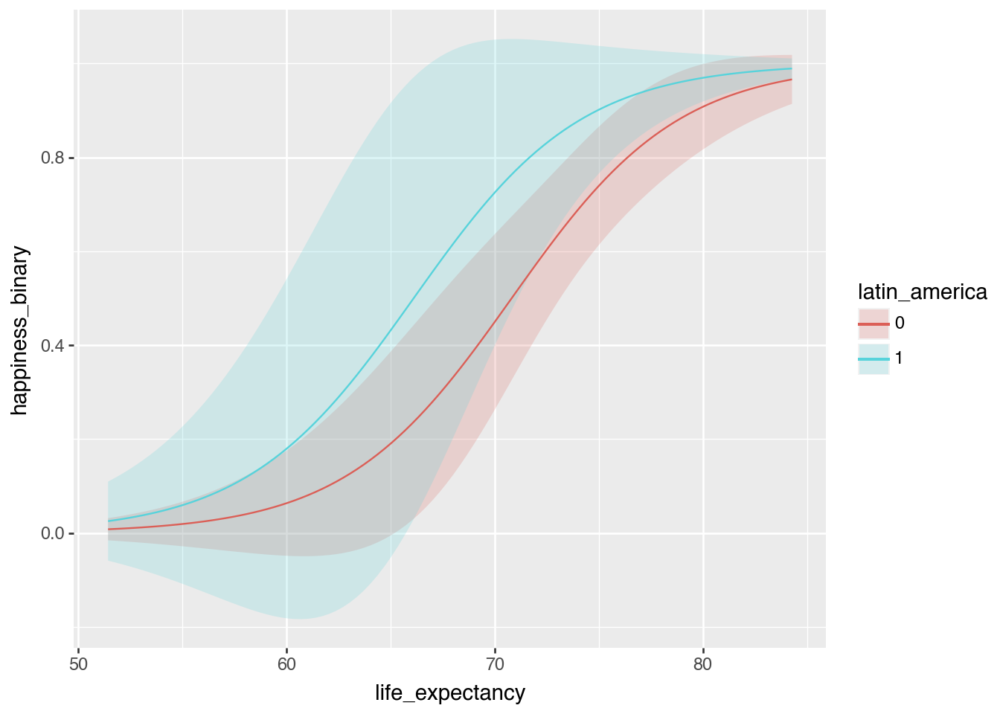
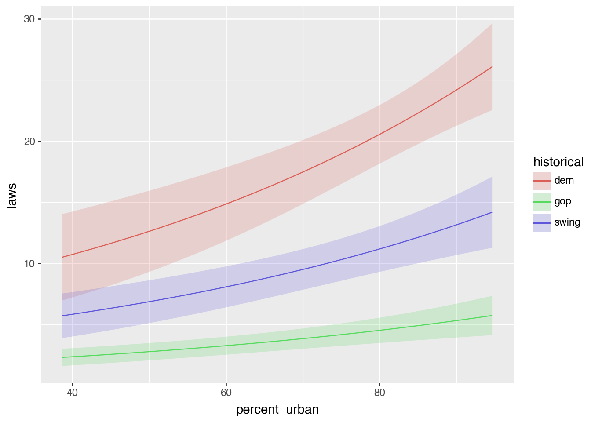
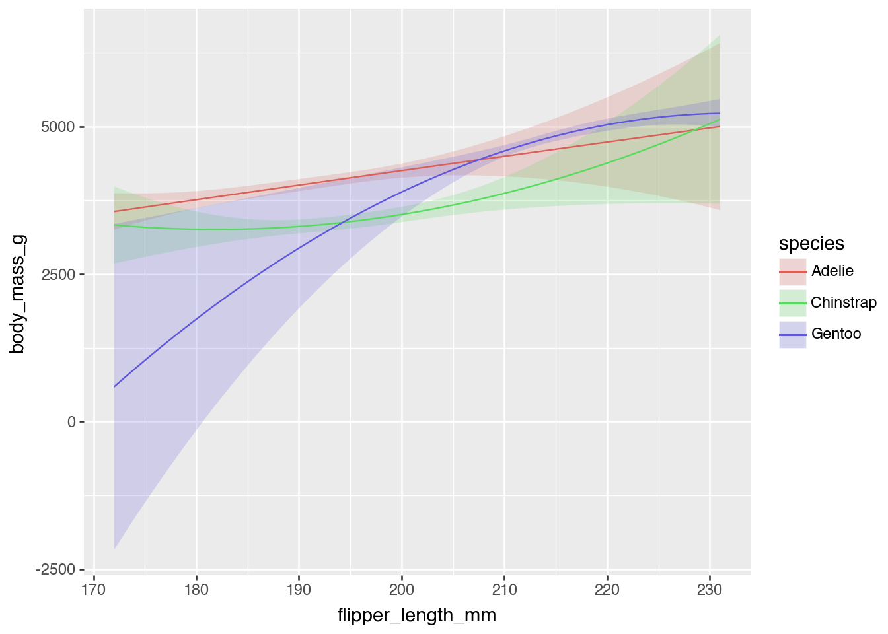

import polars as pl
import numpy as np
import statsmodels.formula.api as smf
from marginaleffects import *
happiness = pl.read_csv("../data/happiness.csv", null_values = "NA")
happiness = happiness.with_columns(
happiness["latin_america"].cast(pl.Int32),
happiness["happiness_binary"].cast(pl.Int32),
happiness["region"].cast(pl.Categorical),
happiness["income"].cast(pl.Categorical)
){marginaleffects} playground
Sliders and switches
model_slider = smf.ols(
"happiness_score ~ life_expectancy",
data = happiness).fit()
model_slider.summary()| Dep. Variable: | happiness_score | R-squared: | 0.552 |
| Model: | OLS | Adj. R-squared: | 0.549 |
| Method: | Least Squares | F-statistic: | 188.5 |
| Date: | Wed, 09 Apr 2025 | Prob (F-statistic): | 1.83e-28 |
| Time: | 11:12:35 | Log-Likelihood: | -179.26 |
| No. Observations: | 155 | AIC: | 362.5 |
| Df Residuals: | 153 | BIC: | 368.6 |
| Df Model: | 1 | ||
| Covariance Type: | nonrobust |
| coef | std err | t | P>|t| | [0.025 | 0.975] | |
| Intercept | -2.2146 | 0.556 | -3.983 | 0.000 | -3.313 | -1.116 |
| life_expectancy | 0.1055 | 0.008 | 13.729 | 0.000 | 0.090 | 0.121 |
| Omnibus: | 6.034 | Durbin-Watson: | 1.935 |
| Prob(Omnibus): | 0.049 | Jarque-Bera (JB): | 3.244 |
| Skew: | -0.101 | Prob(JB): | 0.198 |
| Kurtosis: | 2.321 | Cond. No. | 647. |
Notes:
[1] Standard Errors assume that the covariance matrix of the errors is correctly specified.
plot_predictions(model_slider, condition = "life_expectancy")
model_switch = smf.ols(
"happiness_score ~ latin_america",
data = happiness).fit()
model_switch.summary()| Dep. Variable: | happiness_score | R-squared: | 0.075 |
| Model: | OLS | Adj. R-squared: | 0.069 |
| Method: | Least Squares | F-statistic: | 12.38 |
| Date: | Wed, 09 Apr 2025 | Prob (F-statistic): | 0.000572 |
| Time: | 11:12:35 | Log-Likelihood: | -235.45 |
| No. Observations: | 155 | AIC: | 474.9 |
| Df Residuals: | 153 | BIC: | 481.0 |
| Df Model: | 1 | ||
| Covariance Type: | nonrobust |
| coef | std err | t | P>|t| | [0.025 | 0.975] | |
| Intercept | 5.2438 | 0.096 | 54.360 | 0.000 | 5.053 | 5.434 |
| latin_america | 0.9009 | 0.256 | 3.518 | 0.001 | 0.395 | 1.407 |
| Omnibus: | 4.411 | Durbin-Watson: | 1.917 |
| Prob(Omnibus): | 0.110 | Jarque-Bera (JB): | 3.644 |
| Skew: | 0.273 | Prob(JB): | 0.162 |
| Kurtosis: | 2.485 | Cond. No. | 2.93 |
Notes:
[1] Standard Errors assume that the covariance matrix of the errors is correctly specified.
plot_predictions(model_switch, condition = "latin_america")
model_mixer = smf.ols(
"happiness_score ~ life_expectancy + school_enrollment + C(region)",
data = happiness.to_pandas()).fit()
model_mixer.summary()| Dep. Variable: | happiness_score | R-squared: | 0.565 |
| Model: | OLS | Adj. R-squared: | 0.528 |
| Method: | Least Squares | F-statistic: | 15.28 |
| Date: | Wed, 09 Apr 2025 | Prob (F-statistic): | 3.68e-14 |
| Time: | 11:12:35 | Log-Likelihood: | -111.78 |
| No. Observations: | 103 | AIC: | 241.6 |
| Df Residuals: | 94 | BIC: | 265.3 |
| Df Model: | 8 | ||
| Covariance Type: | nonrobust |
| coef | std err | t | P>|t| | [0.025 | 0.975] | |
| Intercept | -2.7896 | 1.358 | -2.055 | 0.043 | -5.485 | -0.094 |
| C(region)[T.Middle East & North Africa] | 0.1580 | 0.248 | 0.636 | 0.526 | -0.335 | 0.651 |
| C(region)[T.South Asia] | -0.2803 | 0.411 | -0.682 | 0.497 | -1.096 | 0.536 |
| C(region)[T.Latin America & Caribbean] | 0.7005 | 0.221 | 3.175 | 0.002 | 0.262 | 1.138 |
| C(region)[T.Sub-Saharan Africa] | 0.2946 | 0.371 | 0.793 | 0.430 | -0.443 | 1.032 |
| C(region)[T.East Asia & Pacific] | -0.0315 | 0.255 | -0.123 | 0.902 | -0.538 | 0.475 |
| C(region)[T.North America] | 1.0827 | 0.544 | 1.989 | 0.050 | 0.002 | 2.163 |
| life_expectancy | 0.1025 | 0.017 | 5.894 | 0.000 | 0.068 | 0.137 |
| school_enrollment | 0.0077 | 0.010 | 0.785 | 0.435 | -0.012 | 0.027 |
| Omnibus: | 7.101 | Durbin-Watson: | 2.050 |
| Prob(Omnibus): | 0.029 | Jarque-Bera (JB): | 3.602 |
| Skew: | -0.219 | Prob(JB): | 0.165 |
| Kurtosis: | 2.195 | Cond. No. | 2.24e+03 |
Notes:
[1] Standard Errors assume that the covariance matrix of the errors is correctly specified.
[2] The condition number is large, 2.24e+03. This might indicate that there are
strong multicollinearity or other numerical problems.
Basic examples
Happiness and life expectancy
model_mixer = smf.ols(
"happiness_score ~ life_expectancy + school_enrollment + C(region)",
data = happiness.to_pandas()).fit()
avg_comparisons(model_mixer, variables = "life_expectancy")
shape: (1, 9)
| term | contrast | estimate | std_error | statistic | p_value | s_value | conf_low | conf_high |
|---|---|---|---|---|---|---|---|---|
| str | str | f64 | f64 | f64 | f64 | f64 | f64 | f64 |
| "life_expectancy" | "+1" | 0.102474 | 0.017387 | 5.893645 | 3.7777e-9 | 27.979848 | 0.068396 | 0.136552 |
Difference between North America and South Asia
avg_comparisons(
model_mixer,
variables = {"region": ["North America", "South Asia"]}
)
shape: (1, 9)
| term | contrast | estimate | std_error | statistic | p_value | s_value | conf_low | conf_high |
|---|---|---|---|---|---|---|---|---|
| str | str | f64 | f64 | f64 | f64 | f64 | f64 | f64 |
| "region" | "South Asia - North America" | -1.362978 | 0.670415 | -2.033036 | 0.042049 | 4.571788 | -2.676967 | -0.048988 |
Same results from a regular regression table, but it takes a lot more work!
model_mixer.summary()| Dep. Variable: | happiness_score | R-squared: | 0.565 |
| Model: | OLS | Adj. R-squared: | 0.528 |
| Method: | Least Squares | F-statistic: | 15.28 |
| Date: | Wed, 09 Apr 2025 | Prob (F-statistic): | 3.68e-14 |
| Time: | 11:12:35 | Log-Likelihood: | -111.78 |
| No. Observations: | 103 | AIC: | 241.6 |
| Df Residuals: | 94 | BIC: | 265.3 |
| Df Model: | 8 | ||
| Covariance Type: | nonrobust |
| coef | std err | t | P>|t| | [0.025 | 0.975] | |
| Intercept | -2.7896 | 1.358 | -2.055 | 0.043 | -5.485 | -0.094 |
| C(region)[T.Middle East & North Africa] | 0.1580 | 0.248 | 0.636 | 0.526 | -0.335 | 0.651 |
| C(region)[T.South Asia] | -0.2803 | 0.411 | -0.682 | 0.497 | -1.096 | 0.536 |
| C(region)[T.Latin America & Caribbean] | 0.7005 | 0.221 | 3.175 | 0.002 | 0.262 | 1.138 |
| C(region)[T.Sub-Saharan Africa] | 0.2946 | 0.371 | 0.793 | 0.430 | -0.443 | 1.032 |
| C(region)[T.East Asia & Pacific] | -0.0315 | 0.255 | -0.123 | 0.902 | -0.538 | 0.475 |
| C(region)[T.North America] | 1.0827 | 0.544 | 1.989 | 0.050 | 0.002 | 2.163 |
| life_expectancy | 0.1025 | 0.017 | 5.894 | 0.000 | 0.068 | 0.137 |
| school_enrollment | 0.0077 | 0.010 | 0.785 | 0.435 | -0.012 | 0.027 |
| Omnibus: | 7.101 | Durbin-Watson: | 2.050 |
| Prob(Omnibus): | 0.029 | Jarque-Bera (JB): | 3.602 |
| Skew: | -0.219 | Prob(JB): | 0.165 |
| Kurtosis: | 2.195 | Cond. No. | 2.24e+03 |
Notes:
[1] Standard Errors assume that the covariance matrix of the errors is correctly specified.
[2] The condition number is large, 2.24e+03. This might indicate that there are
strong multicollinearity or other numerical problems.
Are these significantly different from each other?
avg_comparisons(
model_mixer,
variables = {"region": ["North America", "South Asia"]},
hypothesis=0
)
shape: (1, 9)
| term | contrast | estimate | std_error | statistic | p_value | s_value | conf_low | conf_high |
|---|---|---|---|---|---|---|---|---|
| str | str | f64 | f64 | f64 | f64 | f64 | f64 | f64 |
| "region" | "South Asia - North America" | -1.362978 | 0.670415 | -2.033036 | 0.042049 | 4.571788 | -2.676967 | -0.048988 |
Is it significantly different from -1?
avg_comparisons(
model_mixer,
variables = {"region": ["North America", "South Asia"]},
hypothesis=-1
)
shape: (1, 9)
| term | contrast | estimate | std_error | statistic | p_value | s_value | conf_low | conf_high |
|---|---|---|---|---|---|---|---|---|
| str | str | f64 | f64 | f64 | f64 | f64 | f64 | f64 |
| "region" | "South Asia - North America" | -1.362978 | 0.670415 | -0.541422 | 0.588217 | 0.765581 | -2.676967 | -0.048988 |
Squared life expectancy
model_poly = smf.ols(
"happiness_score ~ life_expectancy + I(life_expectancy**2) + school_enrollment + latin_america",
data = happiness.to_pandas()).fit()
model_poly.summary()| Dep. Variable: | happiness_score | R-squared: | 0.589 |
| Model: | OLS | Adj. R-squared: | 0.572 |
| Method: | Least Squares | F-statistic: | 35.08 |
| Date: | Wed, 09 Apr 2025 | Prob (F-statistic): | 3.66e-18 |
| Time: | 11:12:35 | Log-Likelihood: | -108.92 |
| No. Observations: | 103 | AIC: | 227.8 |
| Df Residuals: | 98 | BIC: | 241.0 |
| Df Model: | 4 | ||
| Covariance Type: | nonrobust |
| coef | std err | t | P>|t| | [0.025 | 0.975] | |
| Intercept | 15.9100 | 5.220 | 3.048 | 0.003 | 5.550 | 26.270 |
| life_expectancy | -0.4251 | 0.150 | -2.832 | 0.006 | -0.723 | -0.127 |
| I(life_expectancy ** 2) | 0.0037 | 0.001 | 3.498 | 0.001 | 0.002 | 0.006 |
| school_enrollment | 0.0053 | 0.009 | 0.592 | 0.555 | -0.013 | 0.023 |
| latin_america | 0.8022 | 0.197 | 4.077 | 0.000 | 0.412 | 1.193 |
| Omnibus: | 7.729 | Durbin-Watson: | 1.984 |
| Prob(Omnibus): | 0.021 | Jarque-Bera (JB): | 5.183 |
| Skew: | -0.402 | Prob(JB): | 0.0749 |
| Kurtosis: | 2.251 | Cond. No. | 4.21e+05 |
Notes:
[1] Standard Errors assume that the covariance matrix of the errors is correctly specified.
[2] The condition number is large, 4.21e+05. This might indicate that there are
strong multicollinearity or other numerical problems.
avg_comparisons(
model_poly,
newdata = datagrid(life_expectancy = [60, 80]),
by = "life_expectancy",
variables="life_expectancy"
)
shape: (2, 10)
| life_expectancy | term | contrast | estimate | std_error | statistic | p_value | s_value | conf_low | conf_high |
|---|---|---|---|---|---|---|---|---|---|
| f64 | str | str | f64 | f64 | f64 | f64 | f64 | f64 | f64 |
| 60.0 | "life_expectancy" | "+1" | 0.021869 | 0.025088 | 0.871712 | 0.383366 | 1.383207 | -0.027302 | 0.071041 |
| 80.0 | "life_expectancy" | "+1" | 0.170868 | 0.024183 | 7.065503 | 1.6003e-12 | 39.184817 | 0.12347 | 0.218267 |
plot_predictions(
model_poly,
condition="life_expectancy"
)
Are those two slopes significantly different from each other?
avg_comparisons(
model_poly,
newdata = datagrid(life_expectancy = [60, 80]),
by = "life_expectancy",
variables="life_expectancy",
hypothesis = "difference ~ pairwise"
)
shape: (1, 8)
| term | estimate | std_error | statistic | p_value | s_value | conf_low | conf_high |
|---|---|---|---|---|---|---|---|
| str | f64 | f64 | f64 | f64 | f64 | f64 | f64 |
| "(80.0) - (60.0)" | 0.148999 | 0.04259 | 3.498484 | 0.000468 | 11.061478 | 0.065525 | 0.232473 |
Interaction terms
model_poly_int = smf.ols(
"happiness_score ~ life_expectancy * latin_america + I(life_expectancy**2) * latin_america + school_enrollment",
data=happiness.to_pandas()
).fit()
model_poly_int.summary()| Dep. Variable: | happiness_score | R-squared: | 0.590 |
| Model: | OLS | Adj. R-squared: | 0.565 |
| Method: | Least Squares | F-statistic: | 23.05 |
| Date: | Wed, 09 Apr 2025 | Prob (F-statistic): | 1.10e-16 |
| Time: | 11:12:36 | Log-Likelihood: | -108.73 |
| No. Observations: | 103 | AIC: | 231.5 |
| Df Residuals: | 96 | BIC: | 249.9 |
| Df Model: | 6 | ||
| Covariance Type: | nonrobust |
| coef | std err | t | P>|t| | [0.025 | 0.975] | |
| Intercept | 15.7272 | 5.317 | 2.958 | 0.004 | 5.172 | 26.282 |
| life_expectancy | -0.4196 | 0.153 | -2.739 | 0.007 | -0.724 | -0.116 |
| latin_america | 58.5005 | 98.312 | 0.595 | 0.553 | -136.647 | 253.648 |
| life_expectancy:latin_america | -1.5484 | 2.636 | -0.587 | 0.558 | -6.782 | 3.685 |
| I(life_expectancy ** 2) | 0.0037 | 0.001 | 3.388 | 0.001 | 0.002 | 0.006 |
| I(life_expectancy ** 2):latin_america | 0.0104 | 0.018 | 0.587 | 0.558 | -0.025 | 0.045 |
| school_enrollment | 0.0052 | 0.009 | 0.568 | 0.571 | -0.013 | 0.023 |
| Omnibus: | 7.750 | Durbin-Watson: | 1.996 |
| Prob(Omnibus): | 0.021 | Jarque-Bera (JB): | 4.988 |
| Skew: | -0.381 | Prob(JB): | 0.0826 |
| Kurtosis: | 2.238 | Cond. No. | 7.98e+06 |
Notes:
[1] Standard Errors assume that the covariance matrix of the errors is correctly specified.
[2] The condition number is large, 7.98e+06. This might indicate that there are
strong multicollinearity or other numerical problems.
plot_predictions(
model_poly_int,
condition = ["life_expectancy", "latin_america"]
)
avg_comparisons(
model_poly_int,
newdata = datagrid(life_expectancy = [60, 80], latin_america = [0, 1]),
by = ["life_expectancy", "latin_america"],
variables = "life_expectancy")
shape: (4, 11)
| life_expectancy | latin_america | term | contrast | estimate | std_error | statistic | p_value | s_value | conf_low | conf_high |
|---|---|---|---|---|---|---|---|---|---|---|
| f64 | i64 | str | str | f64 | f64 | f64 | f64 | f64 | f64 | f64 |
| 60.0 | 0 | "life_expectancy" | "+1" | 0.022809 | 0.025418 | 0.897368 | 0.369523 | 1.436265 | -0.027009 | 0.072627 |
| 60.0 | 1 | "life_expectancy" | "+1" | -0.280753 | 0.51962 | -0.540305 | 0.588987 | 0.763693 | -1.299189 | 0.737682 |
| 80.0 | 0 | "life_expectancy" | "+1" | 0.170263 | 0.024856 | 6.849983 | 7.3859e-12 | 36.978369 | 0.121546 | 0.21898 |
| 80.0 | 1 | "life_expectancy" | "+1" | 0.281633 | 0.200314 | 1.405955 | 0.159737 | 2.646226 | -0.110976 | 0.674242 |
Synthetic data
predictions(
model_poly_int,
newdata = datagrid(life_expectancy = [60, 80], latin_america = [0, 1])
)
shape: (4, 12)
| rowid | estimate | std_error | statistic | p_value | s_value | conf_low | conf_high | life_expectancy | latin_america | happiness_score | school_enrollment |
|---|---|---|---|---|---|---|---|---|---|---|---|
| i32 | f64 | f64 | f64 | f64 | f64 | f64 | f64 | f64 | i64 | f64 | f64 |
| 0 | 4.29733 | 0.195685 | 21.9605 | 0.0 | inf | 3.913796 | 4.680865 | 60.0 | 0 | 5.707689 | 91.344333 |
| 1 | 7.240226 | 3.769334 | 1.920824 | 0.054754 | 4.190894 | -0.147533 | 14.627984 | 60.0 | 1 | 5.707689 | 91.344333 |
| 2 | 6.228052 | 0.109109 | 57.081022 | 0.0 | inf | 6.014202 | 6.441901 | 80.0 | 0 | 5.707689 | 91.344333 |
| 3 | 7.249024 | 0.52484 | 13.811885 | 0.0 | inf | 6.220357 | 8.277691 | 80.0 | 1 | 5.707689 | 91.344333 |
Logistic regression
model_logit = smf.logit(
formula="happiness_binary ~ life_expectancy + school_enrollment + latin_america",
data=happiness.to_pandas()
).fit()
model_logit.summary()Optimization terminated successfully.
Current function value: 0.380007
Iterations 7| Dep. Variable: | happiness_binary | No. Observations: | 103 |
| Model: | Logit | Df Residuals: | 99 |
| Method: | MLE | Df Model: | 3 |
| Date: | Wed, 09 Apr 2025 | Pseudo R-squ.: | 0.3788 |
| Time: | 11:12:36 | Log-Likelihood: | -39.141 |
| converged: | True | LL-Null: | -63.004 |
| Covariance Type: | nonrobust | LLR p-value: | 2.436e-10 |
| coef | std err | z | P>|z| | [0.025 | 0.975] | |
| Intercept | -19.6938 | 4.777 | -4.123 | 0.000 | -29.056 | -10.331 |
| life_expectancy | 0.2490 | 0.068 | 3.637 | 0.000 | 0.115 | 0.383 |
| school_enrollment | 0.0226 | 0.048 | 0.470 | 0.638 | -0.071 | 0.117 |
| latin_america | 1.1725 | 0.848 | 1.383 | 0.167 | -0.489 | 2.835 |
Ew log odds ↑
Kinda okay odds ratios ↓
np.exp(model_logit.params)Intercept 2.799432e-09
life_expectancy 1.282772e+00
school_enrollment 1.022811e+00
latin_america 3.230127e+00
dtype: float64plot_predictions(
model_logit,
condition=["life_expectancy", "latin_america"]
)
Probability scale predictions
predictions(
model_logit,
newdata = datagrid(life_expectancy = [60, 80], latin_america = [0, 1])
)
shape: (4, 12)
| rowid | estimate | std_error | statistic | p_value | s_value | conf_low | conf_high | life_expectancy | latin_america | school_enrollment | happiness_binary |
|---|---|---|---|---|---|---|---|---|---|---|---|
| i32 | f64 | f64 | f64 | f64 | f64 | f64 | f64 | f64 | i64 | f64 | f64 |
| 0 | 0.063438 | 0.05717 | 1.109638 | 0.267155 | 1.904251 | -0.048613 | 0.175488 | 60.0 | 0 | 91.344333 | 1.0 |
| 1 | 0.179515 | 0.184336 | 0.973847 | 0.330132 | 1.598884 | -0.181777 | 0.540807 | 60.0 | 1 | 91.344333 | 1.0 |
| 2 | 0.907904 | 0.046455 | 19.543888 | 0.0 | inf | 0.816855 | 0.998954 | 80.0 | 0 | 91.344333 | 1.0 |
| 3 | 0.969553 | 0.025765 | 37.631279 | 0.0 | inf | 0.919055 | 1.02005 | 80.0 | 1 | 91.344333 | 1.0 |
Probability scale slopes!
comparisons(
model_logit,
newdata = datagrid(life_expectancy = [60, 80], latin_america = [0, 1]),
by = ["life_expectancy", "latin_america"],
variables = "life_expectancy"
)
shape: (4, 11)
| life_expectancy | latin_america | term | contrast | estimate | std_error | statistic | p_value | s_value | conf_low | conf_high |
|---|---|---|---|---|---|---|---|---|---|---|
| f64 | i64 | str | str | f64 | f64 | f64 | f64 | f64 | f64 | f64 |
| 60.0 | 0 | "life_expectancy" | "+1" | 0.01482 | 0.008675 | 1.708342 | 0.087573 | 3.513373 | -0.002183 | 0.031823 |
| 60.0 | 1 | "life_expectancy" | "+1" | 0.036689 | 0.022376 | 1.639665 | 0.101075 | 3.306505 | -0.007167 | 0.080546 |
| 80.0 | 0 | "life_expectancy" | "+1" | 0.020849 | 0.005693 | 3.662306 | 0.00025 | 11.966046 | 0.009691 | 0.032006 |
| 80.0 | 1 | "life_expectancy" | "+1" | 0.007367 | 0.005437 | 1.354877 | 0.175457 | 2.510813 | -0.00329 | 0.018024 |
Poisson regression
equality = pl.read_csv("../data/equality.csv")
equality = equality.with_columns(
equality["historical"].cast(pl.Categorical),
equality["region"].cast(pl.Categorical),
equality["state"].cast(pl.Categorical)
)model_poisson = smf.poisson(
"laws ~ percent_urban + historical",
data = equality.to_pandas()).fit()
model_poisson.summary()Optimization terminated successfully.
Current function value: 3.722404
Iterations 6| Dep. Variable: | laws | No. Observations: | 49 |
| Model: | Poisson | Df Residuals: | 45 |
| Method: | MLE | Df Model: | 3 |
| Date: | Wed, 09 Apr 2025 | Pseudo R-squ.: | 0.4263 |
| Time: | 11:12:36 | Log-Likelihood: | -182.40 |
| converged: | True | LL-Null: | -317.91 |
| Covariance Type: | nonrobust | LLR p-value: | 1.851e-58 |
| coef | std err | z | P>|z| | [0.025 | 0.975] | |
| Intercept | 0.2080 | 0.270 | 0.769 | 0.442 | -0.322 | 0.738 |
| historical[T.swing] | 0.9053 | 0.143 | 6.348 | 0.000 | 0.626 | 1.185 |
| historical[T.dem] | 1.5145 | 0.135 | 11.194 | 0.000 | 1.249 | 1.780 |
| percent_urban | 0.0163 | 0.004 | 4.558 | 0.000 | 0.009 | 0.023 |
np.exp(model_poisson.params)Intercept 1.231184
historical[T.swing] 2.472684
historical[T.dem] 4.547026
percent_urban 1.016391
dtype: float64plot_predictions(
model_poisson, condition = ["percent_urban", "historical"]
)
avg_slopes(
model_poisson,
newdata = datagrid(percent_urban = [45, 85], historical = ["dem", "gop", "swing"]),
by = ["percent_urban", "historical"],
variables = "percent_urban"
)
shape: (6, 11)
| percent_urban | historical | term | contrast | estimate | std_error | statistic | p_value | s_value | conf_low | conf_high |
|---|---|---|---|---|---|---|---|---|---|---|
| f64 | enum | str | str | f64 | f64 | f64 | f64 | f64 | f64 | f64 |
| 45.0 | "dem" | "percent_urban" | "dY/dX" | 0.189168 | 0.018391 | 10.285996 | 0.0 | inf | 0.153122 | 0.225213 |
| 45.0 | "gop" | "percent_urban" | "dY/dX" | 0.041603 | 0.007211 | 5.769223 | 7.9638e-9 | 26.903898 | 0.027469 | 0.055736 |
| 45.0 | "swing" | "percent_urban" | "dY/dX" | 0.10287 | 0.013163 | 7.815058 | 5.5511e-15 | 47.356144 | 0.077071 | 0.128669 |
| 85.0 | "dem" | "percent_urban" | "dY/dX" | 0.362473 | 0.090267 | 4.015584 | 0.000059 | 14.041638 | 0.185554 | 0.539393 |
| 85.0 | "gop" | "percent_urban" | "dY/dX" | 0.079717 | 0.024479 | 3.256552 | 0.001128 | 9.792347 | 0.031739 | 0.127694 |
| 85.0 | "swing" | "percent_urban" | "dY/dX" | 0.197114 | 0.050732 | 3.885366 | 0.000102 | 13.256657 | 0.09768 | 0.296548 |
Your turn
Create a model that explains variation in penguin weight (body_mass_g) based on flipper length, squared flipper length, bill length, and species interacted with flipper length:
body_mass_g ~ flipper_length_mm * species + I(flipper_length_mm**2) * species + bill_length_mmpenguins = pl.read_csv("../data/penguins.csv")
penguins = penguins.with_columns(
penguins["species"].cast(pl.Categorical),
penguins["island"].cast(pl.Categorical),
penguins["sex"].cast(pl.Categorical)
)model_penguins = smf.ols(
"body_mass_g ~ flipper_length_mm * species + I(flipper_length_mm**2) * species + bill_length_mm",
data=penguins.to_pandas()
).fit()
model_penguins.summary()| Dep. Variable: | body_mass_g | R-squared: | 0.830 |
| Model: | OLS | Adj. R-squared: | 0.825 |
| Method: | Least Squares | F-statistic: | 174.7 |
| Date: | Wed, 09 Apr 2025 | Prob (F-statistic): | 2.00e-118 |
| Time: | 11:12:36 | Log-Likelihood: | -2405.5 |
| No. Observations: | 333 | AIC: | 4831. |
| Df Residuals: | 323 | BIC: | 4869. |
| Df Model: | 9 | ||
| Covariance Type: | nonrobust |
| coef | std err | t | P>|t| | [0.025 | 0.975] | |
| Intercept | -3693.2681 | 1.58e+04 | -0.234 | 0.815 | -3.48e+04 | 2.74e+04 |
| species[T.Gentoo] | -6.227e+04 | 3.52e+04 | -1.771 | 0.078 | -1.31e+05 | 6922.145 |
| species[T.Chinstrap] | 3.005e+04 | 2.73e+04 | 1.099 | 0.273 | -2.38e+04 | 8.39e+04 |
| flipper_length_mm | 29.0297 | 165.768 | 0.175 | 0.861 | -297.092 | 355.151 |
| flipper_length_mm:species[T.Gentoo] | 561.1021 | 332.142 | 1.689 | 0.092 | -92.332 | 1214.536 |
| flipper_length_mm:species[T.Chinstrap] | -311.5523 | 282.129 | -1.104 | 0.270 | -866.595 | 243.490 |
| I(flipper_length_mm ** 2) | -0.0115 | 0.436 | -0.026 | 0.979 | -0.868 | 0.845 |
| I(flipper_length_mm ** 2):species[T.Gentoo] | -1.2578 | 0.789 | -1.594 | 0.112 | -2.810 | 0.295 |
| I(flipper_length_mm ** 2):species[T.Chinstrap] | 0.7879 | 0.727 | 1.083 | 0.279 | -0.643 | 2.219 |
| bill_length_mm | 59.1176 | 7.385 | 8.006 | 0.000 | 44.590 | 73.646 |
| Omnibus: | 5.547 | Durbin-Watson: | 2.272 |
| Prob(Omnibus): | 0.062 | Jarque-Bera (JB): | 5.494 |
| Skew: | 0.314 | Prob(JB): | 0.0641 |
| Kurtosis: | 3.018 | Cond. No. | 9.57e+07 |
Notes:
[1] Standard Errors assume that the covariance matrix of the errors is correctly specified.
[2] The condition number is large, 9.57e+07. This might indicate that there are
strong multicollinearity or other numerical problems.
Look at the raw coefficients and try to interpret what happens to body mass as flipper length increases by one mm (and despair)
Answer these questions
Plot the predicted values of body mass across the full range of flipper lengths and across the three species
- Quantity: Predictions
- Grid: Predictions for each row
- Aggregation: Display as smoothed line
plot_predictions(
model_penguins,
condition = ["flipper_length_mm", "species"]
)
On average, how does body mass increase in relation to small increases in flipper length across species?
- Quantity: Comparison—a one-mm increase in flipper length (slope)
- Grid: Predictions for six synthetic values (short and long flippers * three speices), with all other values held at the mean
- Aggregation: Report values for predictions; no collapsing
comparisons(
model_penguins,
newdata = datagrid(flipper_length_mm = [190, 220], species = ["Adelie", "Chinstrap", "Gentoo"]),
by = ["flipper_length_mm", "species"],
variables = "flipper_length_mm"
)
shape: (6, 11)
| flipper_length_mm | species | term | contrast | estimate | std_error | statistic | p_value | s_value | conf_low | conf_high |
|---|---|---|---|---|---|---|---|---|---|---|
| f64 | enum | str | str | f64 | f64 | f64 | f64 | f64 | f64 | f64 |
| 190.0 | "Adelie" | "flipper_length_mm" | "+1" | 24.677659 | 4.411169 | 5.594358 | 2.2144e-8 | 25.428511 | 16.031926 | 33.323391 |
| 190.0 | "Chinstrap" | "flipper_length_mm" | "+1" | 12.527043 | 9.015424 | 1.389512 | 0.164677 | 2.602289 | -5.142863 | 30.196949 |
| 190.0 | "Gentoo" | "flipper_length_mm" | "+1" | 107.812769 | 37.803434 | 2.851931 | 0.004345 | 7.846276 | 33.719399 | 181.906138 |
| 220.0 | "Adelie" | "flipper_length_mm" | "+1" | 23.990488 | 26.28641 | 0.912657 | 0.361423 | 1.468241 | -27.529928 | 75.510905 |
| 220.0 | "Chinstrap" | "flipper_length_mm" | "+1" | 59.11383 | 28.892588 | 2.045986 | 0.040758 | 4.616782 | 2.485398 | 115.742262 |
| 220.0 | "Gentoo" | "flipper_length_mm" | "+1" | 31.657121 | 5.743241 | 5.512066 | 3.5465e-8 | 24.749046 | 20.400576 | 42.913666 |
Is there a significant difference in the average effect of flipper length between Adelies and Chinstraps?
- Quantity: Comparison—a one-mm increase in flipper length (slope)
- Grid: Predictions for two synthetic values (two species), with all other values held at the mean
- Aggregation: Report values for predictions; no collapsing
- Test: Difference in means
avg_comparisons(
model_penguins,
newdata = datagrid(species = ["Adelie", "Chinstrap"]),
by = ["flipper_length_mm", "species"],
variables = "flipper_length_mm",
hypothesis = "difference ~ pairwise"
)
shape: (1, 8)
| term | estimate | std_error | statistic | p_value | s_value | conf_low | conf_high |
|---|---|---|---|---|---|---|---|
| str | f64 | f64 | f64 | f64 | f64 | f64 | f64 |
| "(Chinstrap) - (Adelie)" | 5.131115 | 13.134894 | 0.390648 | 0.696058 | 0.522721 | -20.612804 | 30.875034 |